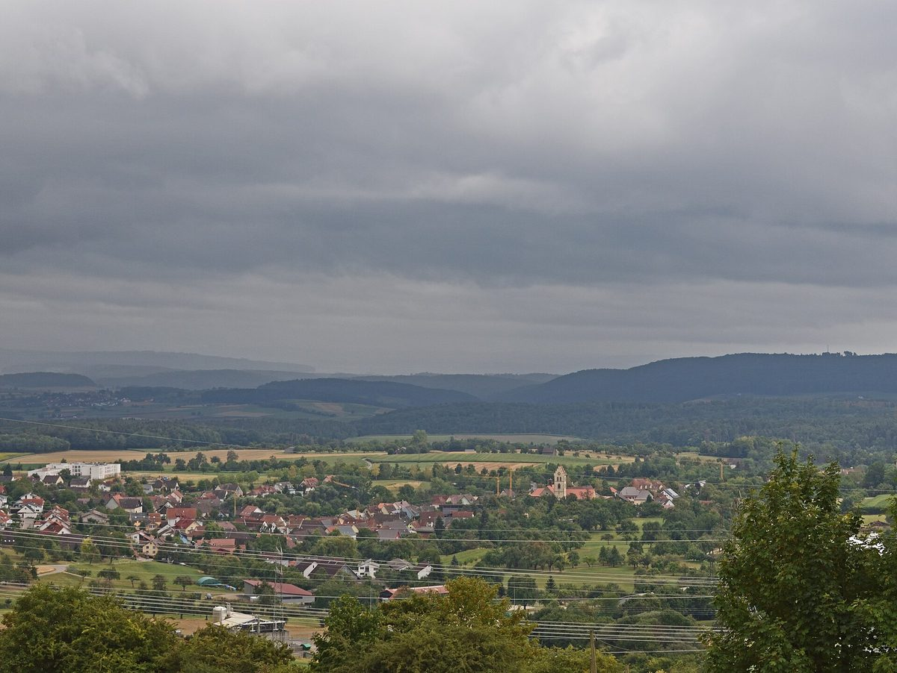

주주 1,700명의 독일 시민 태양광 기업 솔라콤플렉스, 태양광+배터리 묶어 5년 고정가 계약

텡엔 인근 4.5MW 태양광·7.2MWh 배터리…낮은 전력가격 시대의 판로 찾기
독일의 시민 참여형 재생에너지 기업 솔라콤플렉스(Solarcomplex)가 바덴뷔르템베르크주 텡엔(Tengen) 인근에 짓는 태양광·배터리 병설 단지의 전력을 5년 동안 고정가격에 팔기로 했다. 계약 상대는 에너지기업 MVV에너지의 거래 자회사 MVV트레이딩이며, 태양광 4.5MW와 출력 3.6MW·용량 7.2MWh 배터리를 하나의 계약으로 묶었다. 배터리는 전력망이 아니라 이 단지의 태양광 전기로만 충전하고, 판매는 2027년 6월 1일부터 원산지 증명을 포함해 실제 계통에 보낸 전력량 기준으로 정산한다. 솔라콤플렉스 측은 도매 전력가격이 낮거나 마이너스인 시간이 늘어 새 태양광 단지는 배터리와 함께가 아니면 운영하기 어렵다고 설명했다. 솔라콤플렉스는 개인, 기업, 지역 공기업, 시민에너지협동조합, 재단 등 주주 약 1,700명이 자본금 4,800만 유로 남짓을 낸 회사로, 창립 이후 사업 투자 규모는 3억5,000만 유로가 넘는다고 밝혔다.
시민에너지 관점
주주 1,700명이 함께 소유한 회사가 4.5MW 태양광에 7.2MWh 배터리를 붙여 5년 고정가를 확보했다는 것은, 시민 소유 발전소도 시장 변화에 맞춰 사업 구조를 바꿀 수 있다는 뜻이다. 낮 시간 전력가격 하락과 출력제어는 우리도 곧 겪을 일이어서 "작은 시민 발전소는 버티기 어렵다"는 우려가 나오지만, 여럿이 모여 규모를 키우고 저장장치와 장기 계약을 함께 설계하면 수익의 안정성을 지킬 수 있다. 이익이 지역 주주에게 돌아가는 구조일수록 주민의 동의와 지속성도 커진다. 국내에서도 RPS 개편과 계약시장 전환에 맞춰 시민 발전소가 저장장치와 장기 계약을 쓸 수 있도록 제도와 금융을 먼저 열어야 한다.
출처: PHOTON 2026-11-06 - 원문 보기
창간 전 시험 발행 기사입니다.
株主1,700人のドイツ市民太陽光企業ソーラーコンプレックス、太陽光と蓄電池を一体で5年固定価格契約
テンゲン近郊の4.5MW太陽光・7.2MWh蓄電池…低い電力価格の時代の販路づくり
ドイツの市民参加型再生可能エネルギー企業ソーラーコンプレックス（Solarcomplex）が、バーデン＝ヴュルテンベルク州テンゲン（Tengen）近郊に建設する太陽光・蓄電池併設団地の電力を、5年間固定価格で販売することになった。契約相手はエネルギー企業MVVエネルギーの取引子会社MVVトレーディングで、太陽光4.5MWと出力3.6MW・容量7.2MWhの蓄電池を一つの契約にまとめた。蓄電池は送電網からではなく、この団地の太陽光の電気だけで充電し、販売は2027年6月1日から原産地証明を含め、実際に系統へ送った電力量に基づいて精算する。ソーラーコンプレックス側は、卸電力価格が低いかマイナスになる時間が増え、新しい太陽光団地は蓄電池と組み合わせなければ運営が難しいと説明した。同社は個人、企業、地域の公営事業体、市民エネルギー協同組合、財団など約1,700人の株主が資本金4,800万ユーロ余りを出資した会社で、創業以来の事業投資額は3億5,000万ユーロを超えるとしている。
市民エネルギーの視点
1,700人の株主が共同で所有する会社が、4.5MWの太陽光に7.2MWhの蓄電池を加えて5年間の固定価格を確保したことは、市民所有の発電所も市場の変化に合わせて事業の形を変えられることを示している。昼間の電力価格の下落や出力抑制は韓国もまもなく直面する課題で、「小さな市民発電所は持ちこたえられない」という懸念もあるが、多くの人が集まって規模を大きくし、蓄電と長期契約を合わせて設計すれば収益の安定性は守れる。利益が地域の株主に戻る仕組みであるほど、住民の同意と事業の持続性も高まる。韓国でもRPS改編と契約市場への移行に合わせ、市民発電所が蓄電池と長期契約を使えるよう、制度と金融の道を先に開くべきだ。
出典: PHOTON 2026-11-06 - 原文を読む
創刊前の試験発行記事です。
拥有1,700名股东的德国市民光伏企业Solarcomplex，光伏加储能打包签订5年固定价格合同
滕根附近4.5MW光伏、7.2MWh储能…低电价时代寻找销路
德国市民参与型可再生能源企业Solarcomplex决定，将其在巴登-符腾堡州滕根（Tengen）附近建设的光伏与储能共建电站的电力，以固定价格出售5年。合同对方是能源企业MVV能源旗下的交易子公司MVV Trading，合同把4.5MW光伏和功率3.6MW、容量7.2MWh的电池储能打包在一起。电池不从电网取电，只用本电站的光伏电力充电；销售自2027年6月1日起，含原产地证明，按实际送入电网的电量结算。Solarcomplex方面表示，批发电价偏低甚至为负的时段不断增加，新建光伏电站若不配套储能已难以运营。该公司由个人、企业、地方公用事业公司、市民能源合作社和基金会等约1,700名股东出资，资本金略超4,800万欧元，自成立以来项目投资总额超过3亿5,000万欧元。
市民能源视角
由1,700名股东共同拥有的公司为4.5MW光伏配上7.2MWh储能并锁定5年固定价格，说明市民所有的电站也能随市场变化调整商业结构。白天电价下跌和限电也是韩国即将面对的问题，有人担心"小型市民电站撑不下去"，但只要众人联合扩大规模，把储能和长期合同一并设计，就能守住收益的稳定。利益越是回流到当地股东，居民的认同和项目的可持续性就越高。韩国也应配合RPS改革和合同市场转型，率先打通制度和金融渠道，让市民电站能够使用储能和长期合同。
来源: PHOTON 2026-11-06 - 查看原文
本文为创刊前试发行文章。
German Citizen Solar Company Solarcomplex, Owned by 1,700 Shareholders, Signs 5-Year Fixed-Price Deal for Solar Plus Battery
4.5MW solar and 7.2MWh battery near Tengen... finding a market in an era of low power prices
Solarcomplex, a German citizen-backed renewable energy company, will sell the output of a co-located solar and battery park it is building near Tengen in Baden-Württemberg at a fixed price for five years. The buyer is MVV Trading, the trading arm of energy company MVV Energie, and the hybrid deal bundles 4.5MW of solar with a battery of 3.6MW output and 7.2MWh capacity in a single contract. The battery will charge only from the park's own solar power, not from the grid, and sales start on June 1, 2027, settled on the electricity actually fed into the grid, including guarantees of origin. Solarcomplex said the growing number of hours with low or even negative wholesale prices means new solar parks can now only be run sensibly together with batteries. The company is owned by about 1,700 shareholders, including individuals, businesses, municipal utilities, citizen energy cooperatives and foundations, who hold capital of just over €48 million, and says it has invested more than €350 million in projects since it was founded.
Citizen Energy View
A company jointly owned by 1,700 shareholders adding 7.2MWh of storage to 4.5MW of solar and locking in a five-year fixed price shows that citizen-owned power plants can reshape their business as the market changes. Falling midday prices and curtailment are coming to Korea too, and some fear small citizen plants cannot survive, but pooling people to gain scale and designing storage and long-term contracts together can keep returns stable. The more profits flow back to local shareholders, the stronger residents' support and the project's staying power. Korea should open the rules and finance first, as it reforms the RPS and moves to a contract market, so that citizen power plants can use storage and long-term contracts.
Source: PHOTON 2026-11-06 - Read the original
This article was published during the trial period before launch.